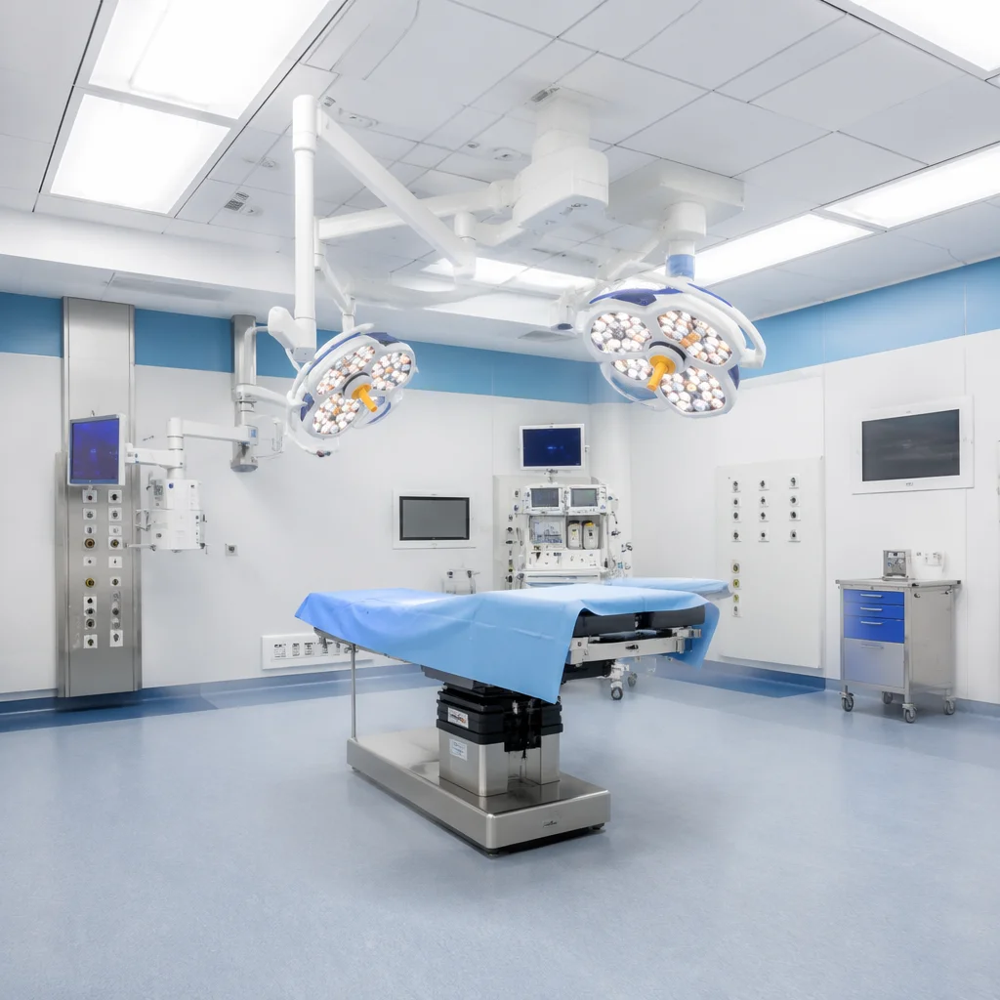
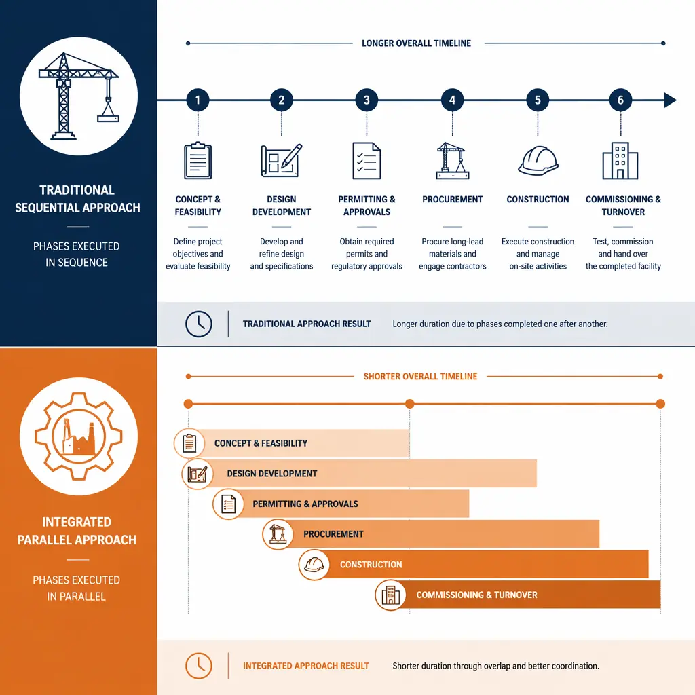
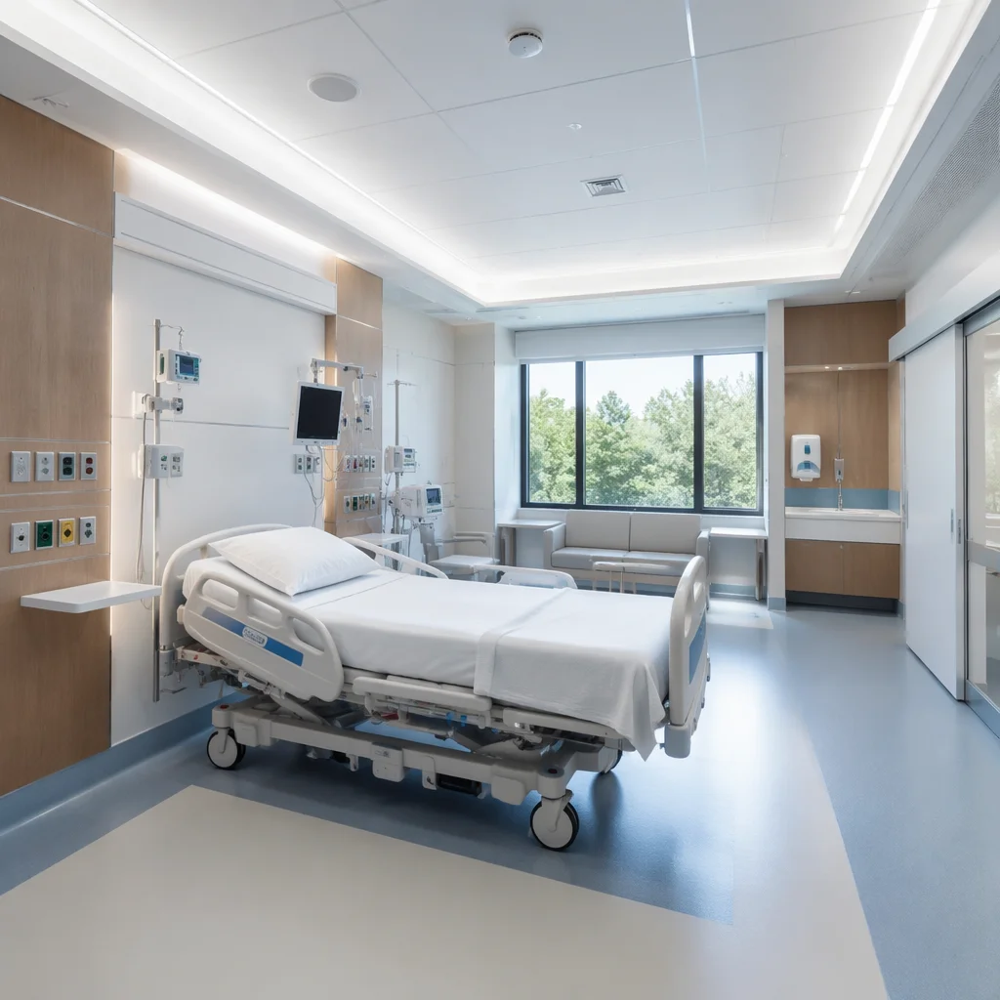

Healthcare construction is the most demanding building category on the planet. Hospital projects must meet infection control standards during construction, integrate complex mechanical systems (medical gases, HEPA filtration, radiation shielding), comply with life-safety codes (see our guide to modular fire safety and compliance), and do it all while the clock is ticking — because every month of construction delay means months of deferred patient care. Modular construction is uniquely suited to these challenges, and healthcare systems worldwide are taking notice.

Why Healthcare Is Turning to Modular Construction
Three forces are converging to drive healthcare toward modular construction:
Capacity pressure. The pandemic exposed how brittle hospital infrastructure can be. Health systems that couldn't add beds quickly faced impossible triage decisions. Governments from the UK's NHS to Singapore's MOH have since mandated surge-capable hospital design — and modular is the only construction method that can deliver new wings in months, not years.
Aging infrastructure. The average US hospital is 40+ years old. Renovating an active hospital is extraordinarily expensive and disruptive — dust containment alone can cost $200–$400 per square foot in infection control measures. Building new wings offsite eliminates this disruption entirely.
Budget reality. Healthcare construction costs $400–$700 per square foot conventionally — among the highest of any building type. For a detailed analysis of how modular methods reduce these costs, see our guide to modular construction financing and cost reduction. Modular construction reduces this by 15–25% through factory efficiency, while compressing the timeline by 40–50%.

Timeline Compression — From Groundbreaking to Patient-Ready
The single largest financial impact of modular healthcare construction is timeline compression. A traditional 150-bed community hospital takes 3–5 years from groundbreaking to first patient. A modular equivalent: 18–30 months.
The speed comes from parallel workflows:
- Months 1–3: Site preparation and foundation work (same as traditional).
- Months 2–14: Factory production of patient room modules, ICU units, and operating theater modules — running simultaneously with site work.
- Months 14–18: Module delivery and installation. A 150-bed hospital's modules can be set in 8–12 weeks.
- Months 18–26: On-site connections (MEP tie-in, medical gas commissioning), interior finishing, equipment installation.
- Month 26–30: Regulatory inspections, staff training, soft opening.
In traditional hospital construction, you build the structure, then fit out each floor sequentially. In modular, the structure is built in the factory while the foundation cures on-site. The two timelines don't add — they overlap. That's where the 50% time savings comes from.
Compliance and Quality — Meeting Healthcare Standards in a Factory
Healthcare construction isn't just about building faster — it's about building to standards that protect patients before the first doctor walks in. Modular factories deliver compliance advantages that job sites cannot match.
Infection Control During Construction
Construction dust is a vector for Aspergillus and other airborne pathogens that are lethal to immunocompromised patients. In occupied hospitals, construction requires sealed barriers, negative air pressure, and continuous air monitoring — adding $200–$400/sqft in ICRA (Infection Control Risk Assessment) costs. In a modular factory, the entire production environment is climate-controlled and clean by default. This isn't just a cost saving — it's a patient safety advantage.
Medical Gas and Mechanical Systems
Hospital modules are pre-fitted with medical gas piping (oxygen, medical air, vacuum, nitrous oxide), HEPA-filtered HVAC, and nurse call systems before they leave the factory. Each system is pressure-tested and commissioned in a controlled environment — no waiting for multiple subcontractors to coordinate on-site.
Radiation Shielding and Specialized Rooms
Imaging suites (CT, MRI, X-ray) require lead lining and RF shielding with zero tolerance for gaps. Factory precision (±2mm) makes this achievable in a way that field construction — with its ±25mm tolerances — struggles to match. The lead lining is installed, inspected, and certified before the module reaches the site.

Modular Healthcare Facility Types
Modular construction works across the full spectrum of healthcare facilities:
- Patient Rooms and Nursing Units: The highest-volume application. Standardized patient rooms with headwall systems, medical gases, and bathroom pods are ideal for modular production. A 30-bed nursing unit can be produced in 12 weeks.
- Intensive Care Units (ICU): ICU modules require higher-level mechanical systems (increased air changes, HEPA filtration, isolation capability). Factory integration ensures these systems are commissioned correctly before patient occupancy.
- Operating Theaters: ORs demand sterile environments with laminar airflow, seamless surfaces, and integrated equipment booms. Factory-built OR modules meet these requirements with far fewer on-site variables.
- Diagnostic and Imaging Suites: CT, MRI, and X-ray rooms with integrated shielding. The precision advantage of factory construction is critical here — a 3mm gap in lead lining compromises the entire room.
- Outpatient Clinics and Ambulatory Care: Faster to deploy than inpatient facilities, modular clinics can bring primary care, dialysis, and specialist services to underserved areas in months rather than years.
- Emergency Departments: ED modules with trauma bays, triage areas, and decontamination facilities — pre-plumbed and pre-wired for rapid deployment during capacity crises.
The Financial Case — Cost Per Bed and Revenue Impact
Healthcare construction economics are measured in cost per bed — and the comparison between traditional and modular is stark:
- Traditional hospital: $1.2M–$1.8M per bed (US market, mid-range community hospital)
- Modular hospital: $900K–$1.4M per bed (15–25% reduction)
- On a 150-bed facility: $45M–$60M total savings in construction cost alone
But construction cost is only half the story. The revenue impact of opening 18–24 months earlier is the real multiplier:
- A 150-bed hospital at 65% occupancy generates approximately $80M–$120M in annual patient revenue
- Opening 20 months earlier captures an additional $130M–$200M in patient revenue that would otherwise not exist
- Financing cost savings on a $250M project: approximately $4M–$7M in reduced construction loan interest
Case Study — How Modular Delivery Transforms Hospital Projects
Consider a hypothetical 150-bed community hospital — the kind of project that healthcare systems plan every year:
| Metric | Traditional | Modular | Difference |
|---|---|---|---|
| Construction Timeline | 42–48 months | 24–28 months | 18–20 months faster |
| Construction Cost | $225M–$270M | $180M–$210M | $45M–$60M savings |
| Cost Per Bed | $1.5M–$1.8M | $1.2M–$1.4M | $300K–$400K per bed |
| Financing Cost | $12M–$15M | $7M–$9M | $5M–$6M savings |
| Revenue Acceleration | N/A | $130M–$200M | Additional revenue captured |
Evaluating Modular for Your Healthcare Project
If you're planning a healthcare facility, here are seven questions to determine whether modular delivery is the right approach:
- Is speed critical? If you need beds operational within 24–30 months, modular is the only viable path.
- Does the project have repeating room types? Patient rooms, ORs, and ICU bays with standardized layouts maximize modular efficiency.
- Is the site constrained? Urban hospital expansions with limited staging space benefit from offsite production.
- Are infection control requirements high? Building adjacent to active hospital wings makes factory construction dramatically safer for patients.
- Do you need budget certainty? 92% of modular projects deliver within 5% of budget — critical for healthcare capital planning.
- Is the facility in a seismic zone? Factory-built modules can be engineered to higher seismic standards than field construction.
- Do local regulations permit modular healthcare? Most jurisdictions now recognize modular construction in healthcare — but verify early in planning.
Healthcare construction faces unique demands: infection control, life safety, complex MEP systems, and unrelenting timeline pressure. Modular construction addresses all of them simultaneously — cleaner, faster, more precise, and with better budget outcomes. As health systems worldwide face the dual challenge of aging infrastructure and growing demand, modular delivery is moving from an interesting option to the default choice for new hospital construction. For a focused look at how this approach works specifically for hospital projects, read our complete guide to modular hospital construction.
Planning a healthcare facility project? Contact our team to discuss how modular construction can compress your timeline, reduce costs, and deliver a higher-quality building. Free feasibility assessments available for qualified healthcare projects.